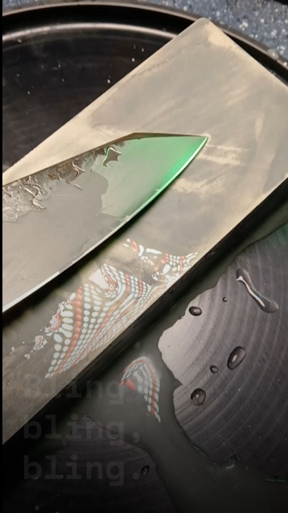

Profile Correction
Cleaner working geometry for a knife that needed more than a quick pass.

Edge care that keeps the magic intact. Precision sharpening, repair, and restoration for Miami restaurants, chefs, and serious home cooks.


After service, you rest. Before prep, they're sharp. Zero-downtime edge care for working kitchens.


Recurring edge care for homes that cook seriously.
Miami Knife Guy · North Miami Beach
Bring back the
Glide.
Restaurants · Hotels · Commercial Kitchens
After service, you rest. Before prep, they're sharp. MKG runs a zero-downtime edge program built around your kitchen's schedule — knives collected after close, returned before the first prep cook clocks in.
No downtime. No waiting. No knives sitting dull while the line runs.
Built for restaurants, hotels, and commercial kitchens across Miami‑Dade and Broward.
The Guest-Facing Edge
Is the steak knife?
Every cut matters — including the one the guest makes.
Previously Serviced
The French Laundry · Four Seasons · Ritz-Carlton · Hotel Nikko · Lolinda · Zuni Café · Nikku Steak · Bourbon Steak · And more across the SF Bay Area & South Florida
Home Cooks · Private Chefs · Serious Food People
You shouldn't have to remember the last time your knives felt right. The Miami Knife Club is a recurring edge-care membership that keeps your tools ready for the food you care about — every month, automatically.
Starting at $29/mo. No commitment traps. Cancel whenever you want.
Built for working kitchens and serious tools.
Every edge is approached through geometry, steel preservation, and real-world kitchen performance. The goal is not to grind every knife the same way — it is to understand what the tool is, what it does, and what it needs to do better.
Specialties
À la Carte
Workshops
Verified Google Reviews
"True blade expert that gave me a new appreciation for my knives. He even sharpens axes!"
"Very recommend! Amazing service, my knives are like a blade! Very reliable! Thanks Sean"
"Miami Knife Guy is a legit master knife sharpener. If you have expensive knives like Nenox, Masamoto, Misono, or single bevel Japanese knives — you can trust Miami Knife Guy for sharpening services."
Happy with your edge?
Submit a review below — all reviews are read and approved by Sean before going live on the site.
All reviews displayed on this site are verified before publication.
Legacy Reputation
Selected five-star reviews from Sean’s years at Perfect Edge before launching Miami Knife Guy in South Florida.
“Big time shout out to Sean who I will only buy knives from moving forward.”
In summary, extensive selection, great prices, wonderful service, great people, fantastic experience. Definitely check them out before buying a knife of any sort anywhere at any price.
My buddy convinced me go with him since they were having their annual sale and I figured it was high time I get myself a chef knife.
The shop is relatively small, just two narrow rooms but their selection is world class, easily the best in the bay area. They have great affordable options all the way to unnecessary displays of wealth items. Shun, Wustoff, Miyabi, MCusta, Benchmade, Spyderco, etc etc, along with a bunch of micro brands and small batch artisan options as well. Sure, it’s not as vast as a 100 year old knife store in the shopping arcade in Kyoto, but you could easily spend a day here trying out their selection.
So the selection is great, and the prices are very fair, very comparable to see what you see online. But buying a knife, especially beyond a $40 Hamilton knife block set, is a personal process. Specs on paper doesn’t always translate to a right fit, actually being able to hold and operate the tool makes a big difference.
And this is where this place shines. Big time shout out to Sean who I will only buy knives from moving forward. The staff here is enthusiastic to provide you with the best possible fit. They pay attention to you, listen to what you’re looking for, and then really go out of their way to ensure you get the right fit. They will happily show you their entire inventory if you want, let you test it out on their boards, fiddle and play with as many as you ever care to. This is not a place where they hand you one knife and breathe over you and put it away the moment you put it down, they encourage you to look at as many as you want and are extremely knowledgeable about their inventory.
This is something I miss about old time specialist shops, that rapport building, that enthusiasm and expertise, just having a great conversation without feeling pressured to buy anything.
I came in pretty much ready to buy one specific chef knife that I’ve been eyeing for years, which they had of course, but my friend told me to try some others out, and with their encouragement trying out probably dozens of knives, the knife I came for didn’t even make my top 3, and I wound up with a knife that was actually a tiny bit cheaper but so much better for me, and man does it look good in my kitchen. And I’m so glad I got that recommendation because it was never on my radar. Sean really took the time to just have a conversation, and his enthusiasm is infectious. I never felt I was being upsold, or being steered towards something that is so often the case in sales, rather this was an old school approach: they want to make sure I had zero regrets with my purchase. I left with an education, a satisfaction of cross shopping everything, and wound up with “the one”. Of course that turned into two very quickly, their sale section has some truly great gems and I scored a sweet deboning knife too.
Today I made my second visit, this time looking for a pocket knife which we started dabbling in during my first visit. Happy to report, same exact experience, and man I’m thrilled with my new pocket knife that Sean even made a slight customization to the blade for me.
I consider these as big purchases, heirloom quality stuff, and as such why not treat yourself to a great experience. Even though the stuff I bought were in their lower half of the spectrum in terms of price, I still received this wonderful, personal, service. These people are not cashiers, they are enthusiasts, experts, and just great people.
Thanks again Sean for all your help, I’m loving my new “boxcutting fidget spinner”, that beveled edge you made for me really is the cherry on top.
“Thank you, Sean and Tara for the incredible experience!”
Thank you, Sean and Tara for the incredible experience!
My friend wanted my opinion on something here and he brought me here on Saturday afternoon. I had no idea what I was getting myself into when I came to the store. First of all, if you like shiny sharp things like I do in particular chef knives etc, having a tent with a full range of displays and a major discount on knives just because the knife didn’t have a box is taunting a child who can’t resist candy. It first started with me browsing outside just playing around holding the knives and reading the different descriptions etc... Then I meet Tara, this passionate and very so kind owner of the shop. she started talking to me and explaining the difference between the knives I was holding etc and said “if I liked to try them out, I have a cutting board inside.” I turned to my friend, wides wide grinning ear to ear, and said “Hell yea” Little did I know I was about to be transported to my version of willie Wonka and the Chocolate Factory; except this eye-candy can hurt you fairly quickly and pretty badly. And inside, I met Sean.
If you ever get to meet Sean, he’s such a great guy. He was so knowledgeable and well versed in all types of knives. pocket knives, cooking knives, western versus eastern knives, and why there is a 10lb meat cleaver made of pure iron...(I’m not kidding. Heck, they have an even bigger one above it). He’s very open-minded and can talk you through situations on why he recommends this knife versus that knife etc. I walked in there without any expectations and walked out there full of knowledge, a few knives, and a lifetime of memories and loyalty to the store. I am a real stickler when it comes to knives; I just know what I like. Despite knowing that, Sean was so gentle with me in showing me knives and explaining the variations of why this maker did this and or why this was one was phased out, pulling out knives for me to try and holding them, etc. He had no expectations of having me buy a knife, nor did I feel pressured into buying one. But it doesn’t help with you having such a personable person like Sean helping you out. I must have spent at least an hour there talking to Sean geeking out to learning about knives! Long story short, my friend and I both walked out of there with knives we didn’t think we ever needed in our lives. Technically, we still don’t but it just makes so much sense to buy the knives we did because it provides efficiency to our cooking and a few ergonomics too. And as we were browsing, there were plenty of loyal customers dropping off knives to get sharpened or picking up their sharpened knives. That was really comforting to see.
If you are ever looking for a knife or want to learn more about knives, this is the place you want to be. Sure you can go to Bed Bath and beyond, William Sonoma or Sur La Table, but those knives are so limited and generic. Go support a small local business, learn about knives and get a better bang for your buck here! I highly recommend it.
“Polite, Professional, Pleasant, Knowledgeable, Respectful, Friendly, Funny.”
OK, just about everybody loves this place for their selection of knives and sharpening. I want to talk CUSTOMER SERVICE.
I dropped in on a Saturday with 7 or 8 pairs of scissors/shears. First thing Sean (spelled correctly) asked was when I wanted to pick them up. What? I thought he would tell me they would be ready in a week. I told him I wasn’t in a hurry I had more at home. It was like I was “In Control”. I asked for an approximation of price. Was it by the inch or the pair? By the pair. What, so you’re going to charge me the same price to sharpen small embroidery scissors and large 10” dressmakers shears. He explained that it was actually harder to sharpen the small ones than the larger one. So jokingly I said I wanted a discount on the larger one then. He gave me my estimate then gave me a professional discount. WHAT? I’m not a professional, he said that was fine. That kid knows his business. Not just the sharpening part, He must eat customer service cereal for breakfast. I have never come across anybody that customer driven before. Not only that, he has a great personality. Polite, Professional, Pleasant, Knowledgeable, Respectful, Friendly, Funny. He could really teach the people at county supply a thing or 9.
When I pick up my scissors I really wanted to see how they did with my ‘old school’ button hole scissors. When I pulled them out Sean said I was wondering what you would use those for. OK, time to pay the piper. . . . . . . LESS than my quote! WHAT (again)! I told him he quoted me this # and he said and now I’m telling you this #. That totally made my month. I was so happy that I brought in my sister’s knives to be sharpen. The following day I decided to bring in some specialty scissors (pinking and applique). Sean wanted to know if I wanted them done while I wait. Nah, I’ll get tomorrow. Wish I had more money (on unenjoyment) and more stuff to be sharpened. Starting my day off with Sean is a treat. Even if you have nothing to be sharpened and don’t need anything for your kitchen. . . . . . . . . . go into to this business just to be treated like a person.
If you are picking up knives either new or ones that have been sharpened, it’s a good idea to pick up some band-aids on your way home.
Hey owners - give that kid a pat on the back and a raise!
“I thought I had ruined my Shun knives, until I spoke with Sean.”
I thought I had ruined my Shun knives, until I spoke with Sean, who gave me a great lesson in knife ownership and use. I felt so relieved to learn my knives could be repaired at a very reasonable cost, and quickly returned to me!! My knives are back in my kitchen, hard at work, and I swear they are better than the day I bought them!!! How IS this possible?? Thank you so VERY much Sean, you are the the BEST.
“Sean, the guru of perfect edge, is an expert both in theory and empirically.”
I sharpen my own knives. That’s just something I like to do when I have the time. But there are times when I can’t find those 45 minutes it takes to bring back the perfect edge by hand. Enter Perfect Edge. Bring your knives in and make sure you do it often enough to get used to sharp cutlery. Spare your extremities.
Sean, the guru of perfect edge, is an expert both in theory and empirically. He’ll help you pick a knife and will restore the hair splitting ability of your blade in 5 minutes or less.
Great selection of cutlery, friendly and fast service, sharpening supplies available. They even offer a Saturday “how to sharpen your knife” class.
“They came out perfect, and Sean was also able to help me fill a gap in my knife collection.”
My review is a week overdue, as I brought all of our Henkels to Perfect Edge for sharpening, and Sean was able to sharpen all my knives while I waited. They came out perfect, and Sean was also able to help me fill a gap in my knife collection...(cooking purposes only LOL)
The manager, Denise was very welcoming and helpful and a pleasure to work with. I would highly recommend Perfect Edge. Awesome selection of knives, tools, pots pans.. U name it.
Legacy reviews are shown for historical context and refer to Sean’s prior work at Perfect Edge.

Fine Dining Kitchens Served
The French Laundry · Lolinda · Zuni Café · Four Seasons · Ritz-Carlton · Hotel Nikko · Nikku Steak · Bourbon Steak · SF Bay Area & South Florida
The Standard
A knife does not fail all at once. It loses bite. It loses shape. The tip breaks. The edge rolls. The profile gets over-ground until the knife no longer feels like itself.
MKG exists for the cooks, chefs, restaurants, and serious home kitchens that notice the difference. Every blade is inspected before it is sharpened — geometry, damage, steel, wear, and intended use all matter.
Backed by 17+ years of professional edge care across Japanese and Western knives, fine dining kitchens, restaurant fleets, and damaged tools that needed more than a quick pass — the goal is not to grind every knife into sharpness. It is to return the right edge, with the least unnecessary steel loss, so the tool feels right again.
The Method
Proof of Standard
Real repair work. Real blade geometry. Real tools brought back to service. From rust removal and chip repair to profile correction and final edge refinement, every blade is approached with respect for the steel, the tool, and the work it has to do.

Featured Restoration
A rusted, chipped deba is not fixed by making it shiny. Damage, profile, and edge geometry have to be corrected before final sharpening begins — with as little unnecessary steel loss as possible.
Repair & Restoration Examples
Cleaner working geometry for a knife that needed more than a quick pass.


Damage corrected before sharpening so the edge can perform correctly again.


Small-blade repair where shape, control, and edge alignment matter.


Tip restored and edge returned to practical service.
The Standard
A sharp knife should feel right on the board, protect the food, and give the cook back control.